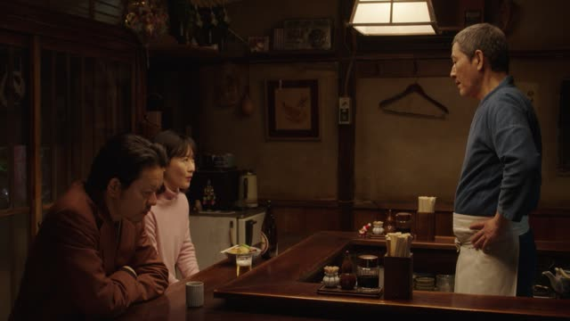

～た後で

Midnight Diner: Tokyo Stories · Season 2, Episode 10
姉は出所したあと 北海道に戻りました。
"After my sister got out, she went back to Hokkaido."
後で means after. Put it after the past form of a verb: 食べた + 後で = after eating. Always the past form, even when you talk about later. With a noun, add の: 仕事の後で (after work).
On this card, a young woman tells the owner what her sister did after leaving prison: 出所した (got out) + あと. Here it's written in kana, あと, and the で is left out, which is common.
Close to てから: both mean "after". てから puts the focus on "first this, then that"; 後で is just "at some point after". The politeness comes from the end of the sentence, here 戻りました.
Kekkon Dekinai Otoko · Episode 2
恋人同士に なったあとでしょ 普通。
"That's after you've become a couple, normally."
Same past form + あと, in a casual sentence. On this card, she says going out for yakiniku as a man and a woman comes after you're a couple: なった (became) + あと.
Quick Examples
A friend wants to call you.
晩ご飯を食べた後で電話するね。
"I'll call you after dinner."
食べる → 食べた + 後で. Past form, even for later tonight.
CasualThe doctor explains your medicine.
この薬は、ご飯の後で飲んでください。
"Please take this medicine after meals."
With a noun: noun + の + 後で.
PoliteTelling a coworker about yesterday.
仕事が終わった後で、ジムに行きました。
"After work, I went to the gym."
PoliteYour kid wants to play a game.
お風呂に入った後でね。
"After your bath, okay?"
CasualWith and without
映画を見ました。ご飯を食べました。
"I watched a movie. I ate." The order isn't clear.
映画を見た後で、ご飯を食べました。
"After the movie, I ate." Now the order is clear.
Examples from Media

Fate/Zero · Episode 20
でもそれは 戦いが終わった後の話です。
"But that's for after the battle is over."
終わった ("ended") + 後 = "after it ended". 戦いが: "the battle". の話: "a story for".

Kino's Journey · Episode 3
この絵は描き終えた後、どうするんですか？
"What will you do with this painting after it's done?"
描き終えた ("finished painting") + 後 = "after it's finished". Past form, even for the future.
Source unknown No source
ピクニックの後で、友人にアイスを奢る予定です。
"After the picnic, I'm treating my friend to ice cream."
Noun + の後で.
Kotaro Lives Alone · Episode 1
たくさん泣いたあとは 早く冷やした方がよい。
"After crying a lot, you should cool your eyes quickly."
泣いた (cried) + あと. Kotaro talks in an old-fashioned way: よい is いい.
Dungeon Meshi · Episode 17
迷宮の主を倒したあとは？
"And after we beat the master of the dungeon?"
倒した (defeated) + あと + は: "and after that?"

Border · Episode 1
爪を切ったあと エタノールで拭いたのよ。
"After cutting the nails, she wiped them with ethanol."
切った ("cut") + あと = "after cutting". Then エタノールで拭いた: "wiped them with ethanol".

Overprotected Kahoko · Episode 10
教会で式挙げたあと
"After the church ceremony..."
式挙げた ("held the ceremony") + あと = "after the ceremony". 教会で: "at a church".

Shirokuma Cafe · Episode 18
ある日、川で鮭をたくさんとったあと。
"One day, after catching lots of salmon in the river [I took a nap]."
た-form + あと.
Further Reading
A Dictionary of Basic Japanese Grammar
Entry "ato de" · pp. 78–80